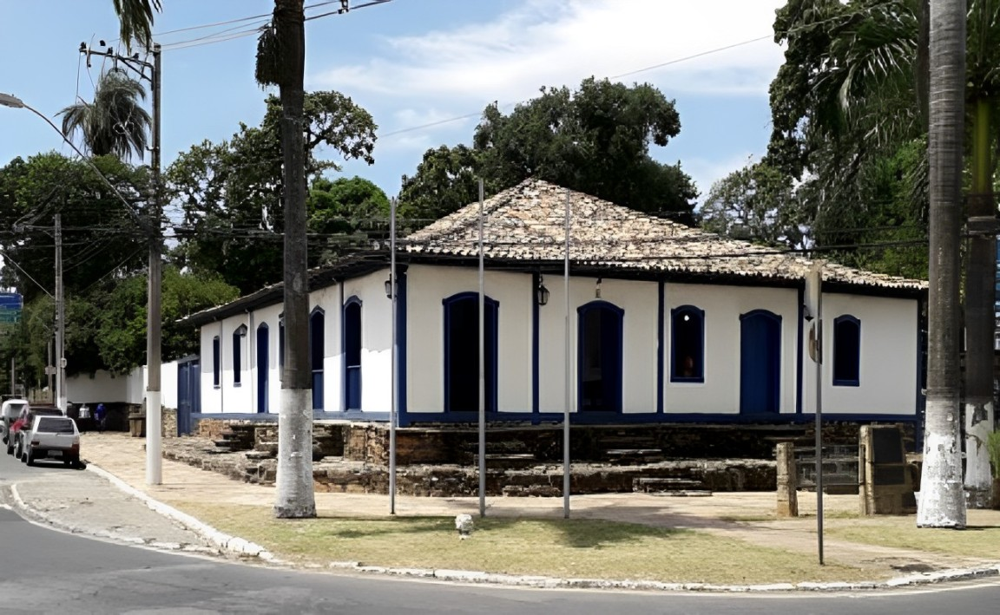

Hospital Regional “Prof. Oswaldo Franco"
O Hospital Regional "Prof. Oswaldo Franco" se destaca como um importante marco na história da saúde de Betim. Sua construção, fruto de um investimento estratégico, garantiu atendimento médico de qualidade a milhares de moradores, impactando positivamente a vida de toda a comunidade.
Edifício da Prefeitura, atualmente cedido ao Fórum
Sua construção, representava um avanço na organização administrativa da cidade, consolidando a estrutura do poder público. A cedência do prédio para o Fórum demonstra a adaptação às necessidades da cidade ao longo do tempo, mostrando a flexibilidade e o compromisso com a justiça.

Casa da Cultura “Josephina Bento”
A Casa da Cultura "Josephina Bento" é um espaço dedicado à arte e à cultura, impulsionando o desenvolvimento cultural da cidade. Criada por iniciativa de um presidente visionário, a Casa da Cultura representa um investimento fundamental na formação de novos talentos e na preservação da história e identidade de Betim.
Investimento no Esporte
Durante oito anos, dediquei-me à expansão e consolidação do Torneio Classista e do Campeonato de Betim, eventos esportivos que promovem a integração e o desenvolvimento social na cidade. Meu trabalho foi crucial para o sucesso dessas iniciativas, contribuindo ativamente com apoio estrutural e financeiro.
Presidente Câmara Municipal de Betim
Em seu mandato na Câmara Municipal de Betim em 1988, Elias se destacou pela criação de projetos importantes que beneficiaram a cidade, com grande foco no incentivo ao esporte. Ele foi fundamental para a expansão de eventos como o Torneio Classista e o Campeonato de Betim, promovendo integração social e desenvolvimento. Além disso, Elias sempre buscou ouvir as demandas da população, trabalhando incansavelmente pelo progresso e bem-estar da comunidade.

Avançando Juntos Pela Nossa Cidade
Nosso compromisso é com as pessoas e o progresso. Juntos, podemos transformar nossa cidade em um lugar mais justo, seguro e próspero para todos. Unindo forças, construiremos um futuro de oportunidades e conquistas, onde cada cidadão será parte ativa dessa mudança. Vamos avançar com responsabilidade e determinação, sempre ouvindo e trabalhando lado a lado com você.